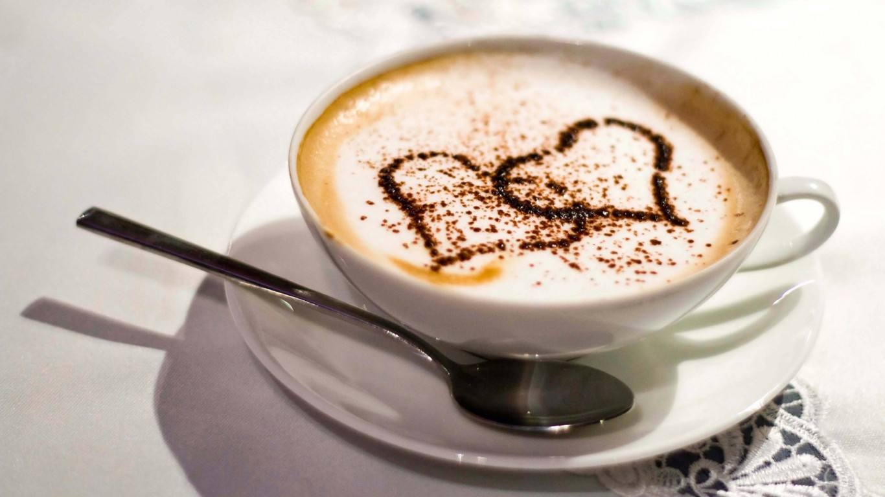
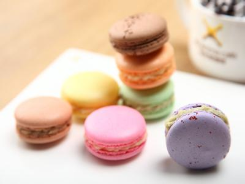
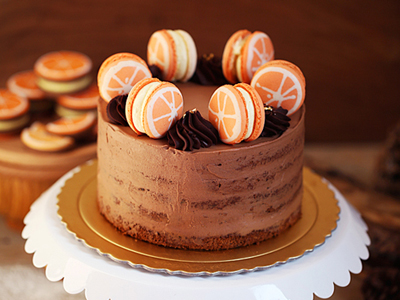
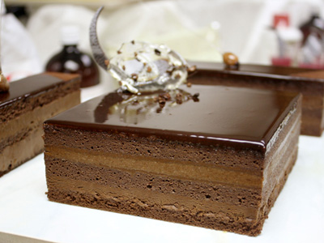

| 让快乐定格在哑舍
| 让快乐定格在哑舍
 关于我们
关于我们
 联系我们
联系我们




马卡龙 是最具有法国式浪漫色彩的甜点，其名字“少女的酥胸”就已经让人产生无限遐想。马卡龙最初的配方追述到意大利文艺复兴时期（Macaron来自意大利语，杏仁面粉团）。
1533年，美第奇家族的凯瑟琳（后来的奥尔良公爵夫人）将马卡龙带入凡尔赛宫。但马卡龙最初的版本只是普通的杏仁蛋白饼，没有内陷儿。直到后来对马卡龙有着划时代意义的巴黎甜点师Lauduree出现，他在简单的杏仁蛋白饼中加入奶油馅和果酱，色彩缤纷的马卡龙便开始一发不可收拾。
慕斯最早出现在美食之都法国巴黎，在法语里就是“泡沫”的意思，特殊质地依赖于在鲜奶油或者蛋白霜里搅打出气泡，口感既可轻盈如絮，入口即化，亦可绵密厚实，香滑饱满。口感变化和各种风味辅料，使之外型，色泽，结构，口味变化丰富。
慕斯冷冻后其味无穷，成为甜点中的极品。它的出现符合了人们追求精致时尚，崇尚自然健康的生活理念，慕斯也给大师们一个更大的创造空间，大师们通过慕斯蛋糕的制作展示出他们内心的生活悟性和艺术灵感。
欧培拉是款有着数百年历史的蛋糕，根据料理圣经《拉鲁斯美食》里定义的就是：夹加咖啡糖浆和巧克力爽的杏仁奶油蛋糕。最初在法国也是由御用甜点师品牌Dalloyau开始发展流行。传统的6层欧培拉是冲破感官的味觉交响：咖啡糖浆，巧克力酱和杏仁海绵蛋糕的乐章此起彼伏，在你的舌尖缓缓吟唱，让你由衷地兴奋和感动。一口下去，咖啡和巧克力的绵柔醇香，夹杂杏仁蛋糕的松软，在嘴里层层化开，如梦如幻。
据说是奥地利的哈布斯王朝和法国的波旁王朝长期纠纷，后来以联姻告终，婚礼上就有这道甜点压轴，所以到现在欧培拉还是法国人为孩子庆生或者婚礼上的甜点。
扫我了解更多